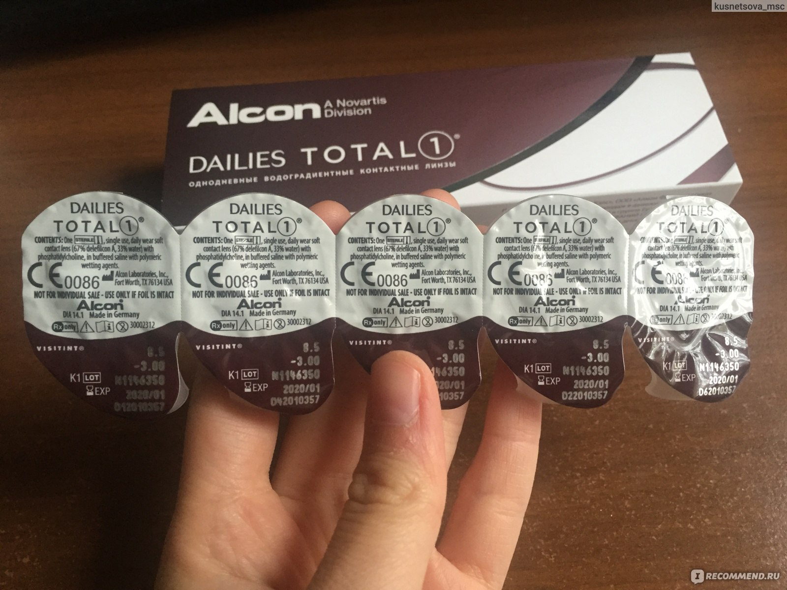

Контактные линзы
Характеристики
Людям с плохим зрением Контактные линзы позволяют по-другому увидеть все окружающие предметы и себя самого.

Alcon Dailies Total 1 -9.00 / 14.1 / 8.5, 30 штук (линз)
Как выглядят линзы.
Контактные линзы характеризуются следующими основными параметрами:
- Оптическая сила/Диоптрия
- Радиус кривизны
- Диаметр
- Тип
- Дизайн
ТИПЫ контактных линз:
- Традиционные
- Торические
- Мультифокольные
- Цветные